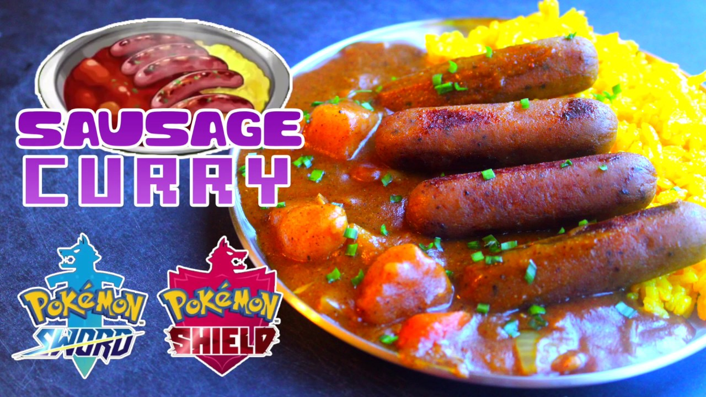

Spicy Sausage Curry as seen in Pokemon Sword and Shield.
A Real Life Recreation of the Spicy Sausage Curry.
Pokemon Sword and Shield introduced a cooking mechanic in which trainers are able to cook special types of curry from ingredients gathered in the Wild Area and by NPCs throughout the game. One of these specialty curries that players can create is the Spicy Sausage Curry. This yummy curry is known for having a savory yet spicy kick which has been well beloved by pokemon along with their trainers.